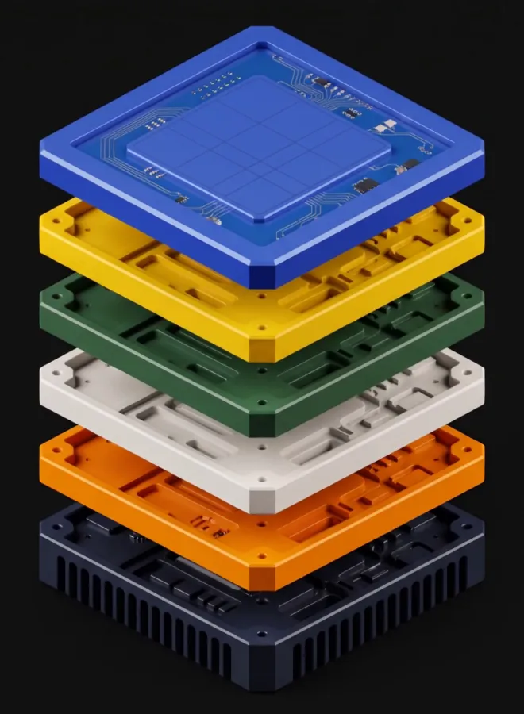
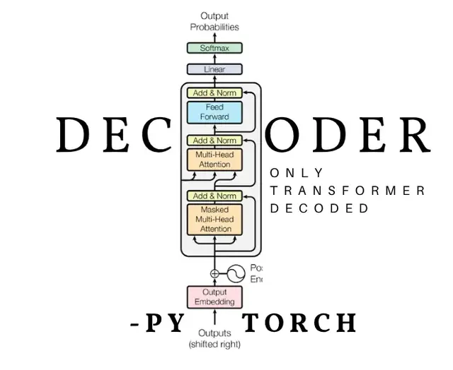

Weekly deploy report
- Deployments128
- Failed3
- Rolled back1
Two failures share a root cause: an expired secret in the staging pipeline. See the trace
I’m Dinesh Kattunga, Cloud AI Engineer at Alakai in Grand Rapids. I build AI agents and machine-learning systems, then deploy them on AWS so they keep working after the demo.
Email meI trained as a mechanical engineer. You understand a machine by drawing its exploded view.
So here is mine: every layer of an AI product, in the order I learned it, from the screen down to the cloud.

2022 – 2023
I started where people touch software: the screen.
At NxtWave’s CCBP 4.0 programme I learned to build the web by hand: semantic HTML, CSS layout, responsive design, JavaScript and React. I learned to care whether a button feels right under a thumb, and I still design the screens my agents and dashboards live in.

Same markup, two states. Flip it: the HTML doesn’t change, only the decisions do.
Two failures share a root cause: an expired secret in the staging pipeline. See the trace
2023 – 2024
Then I learned to make numbers answer business questions.
SQL first, then Power BI, DAX and data modelling. As a data analyst intern at AtliQ Technologies I mined more than 100,000 records with SQL and Python, built the dashboards people read every week, and automated the prep work that used to eat afternoons.

The pattern behind my Business 360 dashboard: pick a year and a region and every figure answers at once.
Sample figures for AtliQ Hardware, the fictional company in the Codebasics challenge.
2024 – 2025
At Grand Valley I learned to build models that hold up and explain themselves.
My M.S. in Applied Computer Science turned into research on explainable AI for precision agriculture: forecasting soil moisture so farms water only what they need, and opening up CNN decisions with Grad-CAM++, SHAP and LIME so people can see why a model decided what it did.

A small neural network learns to separate two classes of points, in your browser, with no library. Press train and watch the boundary bend.
2 inputs → 16 tanh units → 1 sigmoid output · gradient descent
2025
Then I wanted to know how a transformer really thinks, so I built one.
I wrote a decoder-only transformer from scratch in PyTorch: embeddings, causal self-attention, the training loop, every tensor by hand. Before it, a WaveNet-style character model. After it, the explainer I wished I’d had when I started.

Type a sentence. Each row shows where one token looks among the tokens before it: scaled dot-product attention with a causal mask, computed as you type.
The weights are untrained, so it shows the mechanics, not the meaning.
2025 – now
Now I build agents that do real work, and the cloud that keeps them running.
As a Cloud AI Engineer at Alakai I design MCP servers that connect language models to real data, securely, and the AWS architecture underneath them: Bedrock and AgentCore for the agents, Lambda, API Gateway and Step Functions for the glue, ECS and EKS for the services, with CI/CD, monitoring and security across every environment.

Pick a request and watch the pattern I build: the agent plans, calls tools through MCP, checks what came back and answers. Every AWS service it touches lights up.
A replay with sample data. No model is called from this page.
Press “Run the agent” to start.
PyTorch PyTorch
PyTorch ResNet50
ResNet50 XGBoost
XGBoost scikit-learn
scikit-learn Power BI
Power BI Play Store data
Play Store data Excel
ExcelTen projects across deep learning, machine learning and business intelligence. All of it on GitHub

Keep it simple. Write the docs someone else can read. Ship a demo fast, measure it, explain the trade-offs, then iterate. For me interpretability isn’t a research topic, it’s a habit.
I write about machine learning on Medium, study for the next AWS exam, and take things apart to see how they work, a habit left over from mechanical engineering.